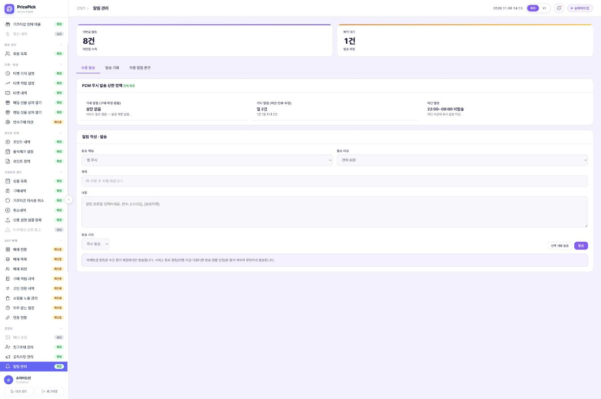
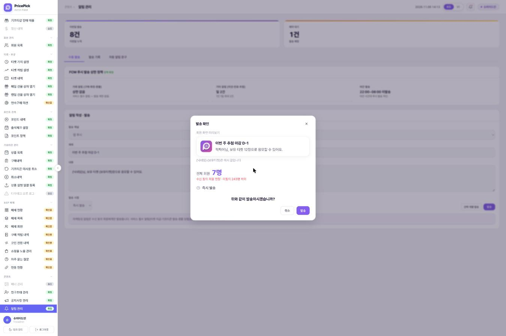
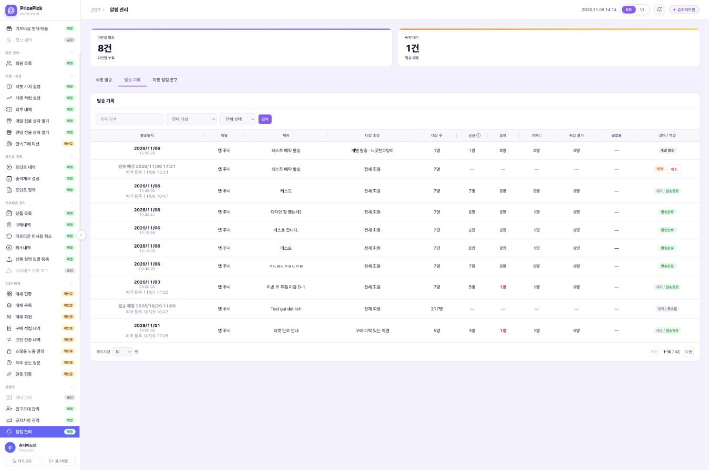
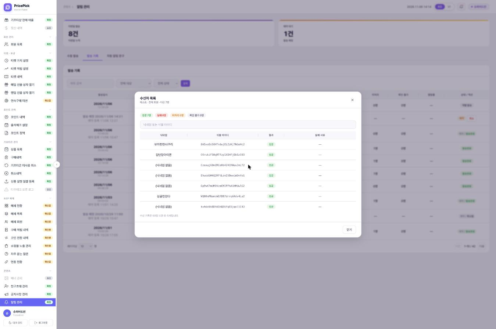
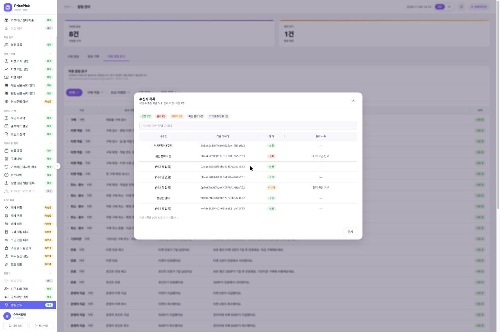
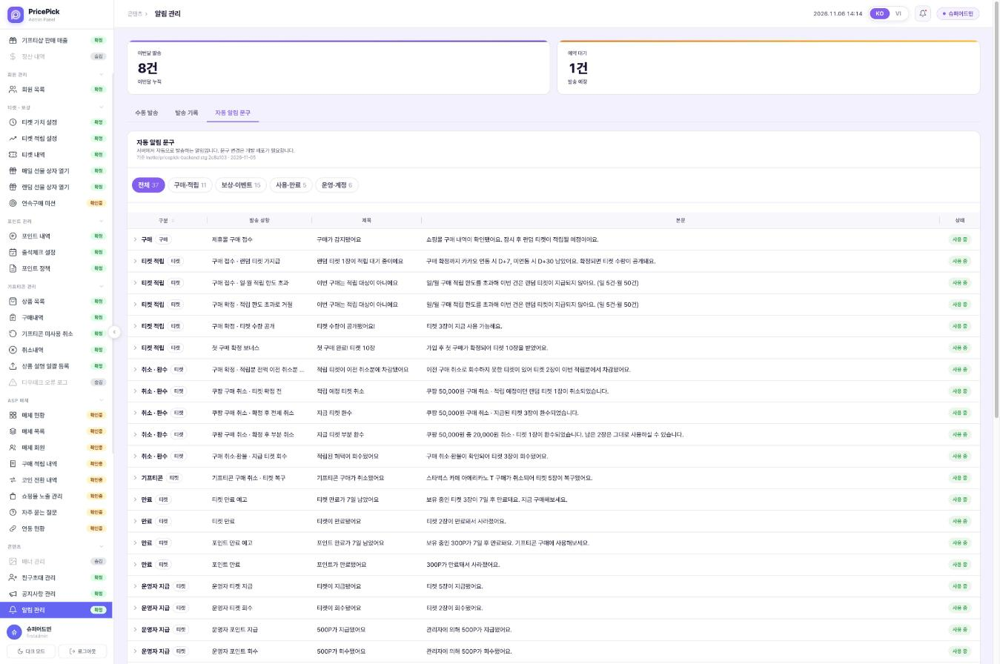

이 화면은 운영자가 알림을 작성해 보내는 화면이다. 알림 관리는 이 탭을 포함해 「수동 발송 / 발송 기록 / 자동 알림 문구」 탭 3개로 나뉘고, 집계 카드 2개는 탭 위에 공통으로 있다. STG와 달라지는 점은 화면 구성(탭 분리), 정책 카드 위치, 예약 일시 입력란, 「선택 개별 발송」 이름이다. 제목 · 내용 빈 칸 경고는 STG에 이미 있어 그대로 둔다.Đây là màn hình quản trị viên soạn và gửi thông báo. Quản lý thông báo gồm 3 tab 「수동 발송 / 발송 기록 / 자동 알림 문구」 kể cả tab này, 2 thẻ thống kê nằm chung phía trên tab. Điểm khác với STG là bố cục màn hình (tách tab), vị trí thẻ chính sách, khung ngày giờ đặt lịch và tên 「선택 개별 발송」. Cảnh báo trống tiêu đề · nội dung STG đã có nên giữ nguyên.

이 화면은 「발송」을 누르면 실제 발송 전에 뜨는 최종 확인창이다. STG에는 없는 화면이다. 운영자는 여기서 회원이 받을 모습, 실제로 받는 인원, 발송 시점을 확인한 뒤 발송한다. 수신 동의 회원만 대상에 넣는 것은 STG 서버가 이미 하고 있고, 이 창은 그 인원을 화면에 보여 준다. 변수 치환은 STG에 없어 새로 필요하다.Đây là hộp xác nhận cuối cùng hiện ra trước khi gửi thật khi bấm 「발송」. STG không có màn hình này. Quản trị viên kiểm tra tại đây hình thức hội viên sẽ nhận, số người thực nhận và thời điểm gửi rồi mới gửi. Việc chỉ đưa hội viên đồng ý vào đối tượng thì server STG đã làm, hộp này hiển thị số người đó lên màn hình. Thay biến thì STG chưa có nên cần làm mới.

이 화면은 운영자가 보낸 수동 발송 건의 기록이다. STG의 「알림 발송 내역」을 대신한다. STG와 달라지는 점은 미처리 · 확인 불가 열 추가, 대상 수 기준, 예약 건 표시, 상태 배지, 예약 건 취소 방식이다. 검색 줄은 STG에 이미 있어 위치와 상태 선택지만 바뀐다.Đây là lịch sử các tin gửi thủ công do quản trị viên gửi, thay cho 「알림 발송 내역」 của STG. Điểm khác với STG là thêm cột chưa xử lý · không thể xác nhận, tiêu chí số đối tượng, cách hiển thị tin đặt lịch, huy hiệu trạng thái và cách hủy tin đặt lịch. Dòng tìm kiếm STG đã có nên chỉ đổi vị trí và lựa chọn trạng thái.


이 화면은 발송 기록의 행을 누르면 열리는 창이다. 그 발송 건을 받은 회원과 회원별 결과를 보여 준다. 「실패 사유」 열은 STG에 이미 있고, 창 폭과 네 상태 표시가 바뀐다.Đây là hộp mở ra khi bấm vào một dòng trong Lịch sử gửi, hiển thị các hội viên nhận tin đó và kết quả của từng người. Cột 「실패 사유」 STG đã có; thay đổi là độ rộng hộp và cách hiển thị 4 trạng thái.

이 화면은 서버가 자동으로 보내는 알림 문구를 운영자가 확인하는 조회 화면이다. STG에는 없는 신설 탭이다. 문구는 백엔드 코드에 있으므로 이 화면에서 고치지 않는다.Đây là màn hình chỉ xem để quản trị viên kiểm tra nội dung thông báo server tự động gửi. Đây là tab mới, STG không có. Nội dung nằm trong code backend nên không sửa trên màn hình này.
발송 기록과 수신자 목록의 네 상태를 나누는 기준이다. 발송 기록 「성공」 열 머리의 물음표를 누르면 같은 기준이 「발송 결과 기준」 창으로 열린다.Đây là tiêu chí chia 4 trạng thái trong Lịch sử gửi và Danh sách người nhận. Bấm dấu hỏi ở đầu cột 「성공」 trong Lịch sử gửi thì cùng tiêu chí này mở ra trong hộp 「발송 결과 기준」.
| 구분Phân loại | 기준Tiêu chí | 들어가는 경우Trường hợp thuộc loại này |
|---|---|---|
| 성공Thành công | 푸시 서버가 접수함Server push đã tiếp nhận | 정상 발송Gửi bình thường |
| 실패Thất bại | 보내려 했으나 거절당함Đã thử gửi nhưng bị từ chối | 기기 토큰 만료 · 앱 삭제 · 잘못된 토큰 · 네트워크 오류Token thiết bị hết hạn · đã xóa app · token sai · lỗi mạng |
| 미처리Chưa xử lý | 보낼 주소가 없어 시도 자체를 못 함Không có địa chỉ để gửi nên không thử gửi được | 푸시 토큰 없음 · 알림 권한 거부 · 수신 거부Không có push token · từ chối quyền thông báo · từ chối nhận |
| 확인 불가Không thể xác nhận | 보냈는지 결과를 알 수 없음Không biết kết quả đã gửi hay chưa | 응답 못 받음 · 과거 기록에 결과가 남지 않은 건Không nhận được phản hồi · bản ghi cũ không lưu kết quả |